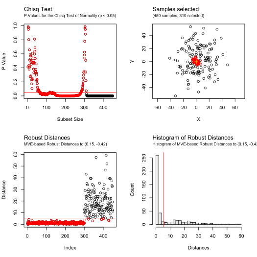

Recursive outlier filtering based on unimodality and multinormality tests
Source:R/filter_outliers.R
filter_outliers.RdRecursive outlier filtering based on unimodality and multinormality tests
filter_outliers( data, center, test = "Mardia", threshold = 0.05, distType, trimmedPerIteration = 1, debug = FALSE, warnings = FALSE )
Arguments
| data | Matrix of numerical values containing the observations (one per row, with two columns for X and Y coordinates) |
|---|---|
| center | Coordinates used to computes the distances of the samples and order them (array of numerical two values, for X and Y) |
| test | Statistical test to use. Valid options are "DIP" for unimodality test, or "Mardia", "Kurtosis", "Skewness", "KS", "KS-adj", "Shapiro", "Lillie", and "Chisq" for multivariate normality test |
| threshold | Threshold of significance for the statistical test (between 0 and 1, default: 0.05) |
| distType | Distance metric used to order the samples. Valid options are "Euclidean", "MCD", "MVE", and "OGK". If empty or NULL, "Euclidean" will be automatically selected for unimodality tests, and "MCD" for normality tests |
| trimmedPerIteration | Number of samples trimmed at each iteration (positive integer, default: 1) |
| debug | Logical value. |
| warnings | Logical value, to display the warnings and errors caught |
Value
The function returns an S3 object of type BRIL.Filtering
containing the following values:
callParameters of the call (contains data, test,
testType, center, threshold, trimmedPerIteration and distType)
distancesDistances of each sample from data to the center
provided
p.valuesP.Values of the test at each iteration
index.p.valuesSubset size corresponding to each P.Value, for plotting purpose
selectedIndices of the samples from data selected at the end of
the filtering
cutoffDistanceDistance of the furthest inlier selected
Details
For unimodality tests parameter distType should be set to
"Euclidean" (as the distribution might contains a large amount of
outliers). For normality tests robust distances are preferable, using a
robust estimate estimates of location and scatter ("MCD","MVE", or "OGK").
See also
Examples
## Example 1 # Illustrative data XY <- rbind( mvtnorm::rmvnorm(300, c(0, 0), diag(2) * 3 - 1), mvtnorm::rmvnorm(100, c(15, 20), diag(2)), mvtnorm::rmvnorm(150, c(-10, 15), diag(2) * 2 - 0.5), mvtnorm::rmvnorm(200, c(5, 5), diag(2) * 200) ) # Compute an estimate for the center center <- median_rec(XY)$median # Remove non unimodal outliers from this location filtering <- filter_outliers(XY, center, test = "DIP", debug = TRUE) print(filtering, maxDisplayed = 200)#> #> => Results for filter_outlier() using DIP Unimodality Test (p.value > 0.05) and Euclidean Distances #> 750 samples: 409 selected, 341 filtered (1 trimmed per iteration) #> #> Selected indices: #> [1] 64 134 48 264 15 146 76 289 58 282 271 212 59 191 126 118 216 6 #> [19] 196 45 261 220 90 256 227 269 42 165 50 3 192 130 74 38 270 20 #> [37] 84 44 234 257 114 244 93 137 23 102 197 88 180 221 287 32 78 142 #> [55] 129 297 195 138 24 300 145 274 222 53 2 218 18 236 250 225 30 292 #> [73] 290 213 120 219 181 248 170 293 31 115 98 112 37 35 262 68 22 272 #> [91] 144 67 232 249 151 8 149 33 12 173 153 26 75 171 286 49 278 72 #> [109] 159 97 277 166 7 210 80 5 4 28 184 255 246 160 89 143 106 39 #> [127] 147 105 13 83 127 288 156 201 233 205 187 71 107 182 245 275 69 279 #> [145] 135 17 259 70 161 207 34 121 63 133 86 263 148 162 215 57 202 54 #> [163] 285 122 214 62 131 11 101 268 204 155 46 61 65 132 243 128 56 266 #> [181] 99 103 189 240 186 294 251 73 96 157 82 178 198 179 226 123 273 136 #> [199] 66 16 #> ... (209 hidden) #> #> DIP Test p.values: #> [1] 0 0 0 0 0 0 0 0 0 0 0 0 0 0 0 0 0 0 0 0 0 0 0 0 0 0 0 0 0 0 0 0 0 0 0 0 0 #> [38] 0 0 0 0 0 0 0 0 0 0 0 0 0 0 0 0 0 0 0 0 0 0 0 0 0 0 0 0 0 0 0 0 0 0 0 0 0 #> [75] 0 0 0 0 0 0 0 0 0 0 0 0 0 0 0 0 0 0 0 0 0 0 0 0 0 0 0 0 0 0 0 0 0 0 0 0 0 #> [112] 0 0 0 0 0 0 0 0 0 0 0 0 0 0 0 0 0 0 0 0 0 0 0 0 0 0 0 0 0 0 0 0 0 0 0 0 0 #> [149] 0 0 0 0 0 0 0 0 0 0 0 0 0 0 0 0 0 0 0 0 0 0 0 0 0 0 0 0 0 0 0 0 0 0 0 0 0 #> [186] 0 0 0 0 0 0 0 0 0 0 0 0 0 0 0 #> ... (548 hidden) #> #> Outliers cutoff distance from center (-0.262998772520542, 0.188816246468157): #> [1] 16.08506 #> #> #> Euclidean Distances: #> [1] 3.03667275 1.03391124 0.68443326 1.41367637 1.41223578 0.44726271 #> [7] 1.38402896 1.26437615 2.27651181 2.57101541 1.82455917 1.27839731 #> [13] 1.48481502 4.19006118 0.17479285 2.04650363 1.65715496 1.04427766 #> [19] 3.25801891 0.79119968 3.55033318 1.22762046 0.87271553 0.98350645 #> [25] 3.24988816 1.29649596 2.43447171 1.42886116 3.66322466 1.07225665 #> [31] 1.15932308 0.96498273 1.27708359 1.67186511 1.21368642 3.06141184 #> [37] 1.20753056 0.77239241 1.46804570 4.90217619 2.32835658 0.57793136 #> [43] 2.22097250 0.80637419 0.47274415 1.85164451 4.18217265 0.04286835 #> [49] 1.34433285 0.67470311 2.13466488 2.79578752 1.01123710 1.76189000 #> [55] 2.89644109 1.88390346 1.72111911 0.28198757 0.33857015 3.28547332 #> [61] 1.85441626 1.80496135 1.67854847 0.02484864 1.86046649 2.04638781 #> [67] 1.24045535 1.21914423 1.63357021 1.66063218 1.57713043 1.34739174 #> [73] 1.96172347 0.70919993 1.30029041 0.24197347 2.95970827 0.97030162 #> [79] 3.93096182 1.39890856 2.82011503 1.98738022 1.49925799 0.80491896 #> [85] 3.85022588 1.69135646 2.96955389 0.88291764 1.46034538 0.49401473 #> [91] 2.91127401 2.76025762 0.86298023 4.01314114 2.99269602 1.98531733 #> [97] 1.35046042 1.17181335 1.88888303 2.89463281 1.82552537 0.88218695 #> [103] 1.90363654 4.27023495 1.48470653 1.46293041 1.58375879 3.20589852 #> [109] 2.36904803 2.05061101 2.56977789 1.19713514 2.76013186 0.84932588 #> [115] 1.16765708 2.51145180 2.30394753 0.41199879 2.08827479 1.12262505 #> [121] 1.67782477 1.77658730 2.02372376 2.86625764 2.79964255 0.37252951 #> [127] 1.50512549 1.86667199 0.97437012 0.69775946 1.82312854 1.86099322 #> [133] 1.68416293 0.03999304 1.64402698 2.03275179 0.87260544 0.98312763 #> [139] 2.73876353 2.17900486 2.36416548 0.97435392 1.46084066 1.23091790 #> [145] 0.99235176 0.24159860 1.46929430 1.70056156 1.26486642 3.68413885 #> [151] 1.24807608 4.81743069 1.29275809 4.51433210 1.84892556 1.53258813 #> [157] 1.98588769 2.20514078 1.34946430 1.45123776 1.66106124 1.70561804 #> [163] 2.47657782 3.77095034 0.60280229 1.37611389 2.58851533 2.11910753 #> [169] 2.97987246 1.14481583 1.32457681 3.99101260 1.28172747 4.02792074 #> [175] 2.19097986 2.28935700 2.20036838 1.99764503 2.01593182 0.92050466 #> [181] 1.13793274 1.59921126 2.73709410 1.43173376 2.70635630 1.92499571 #> [187] 1.56321742 3.41694804 1.90961219 2.77469614 0.36621811 0.69477322 #> [193] 2.34521037 4.74839250 0.98180349 0.47066731 0.88269227 2.01378458 #> [199] 2.32308252 2.71722258 #> ... (550 hidden) #>## Example 2 # Illustrative data XY <- rbind( mvtnorm::rmvnorm(300, c(0, 0), diag(2) * 4 - 1.5), mvtnorm::rmvnorm(150, c(5, 5), diag(2) * 400) ) # Compute an estimate for the center center <- median_rec(XY)$median # Remove non normal outliers from this location filtering <- filter_outliers(XY, center, test = "Chisq", distType = "MVE", debug = TRUE) print(filtering)#> #> => Results for filter_outlier() using Chisq Normality Test (p.value > 0.05) and MVE-based Robust Distances #> 450 samples: 313 selected, 137 filtered (1 trimmed per iteration) #> #> Selected indices: #> [1] 256 18 232 55 182 6 128 138 19 281 178 186 40 77 294 71 248 274 #> [19] 153 91 223 226 213 59 230 231 267 253 22 129 202 134 215 227 198 154 #> [37] 51 105 181 185 279 13 222 172 272 217 140 206 200 38 251 73 139 240 #> [55] 54 175 156 177 289 50 125 81 239 27 143 61 4 8 147 113 207 108 #> [73] 292 235 164 68 29 112 257 87 288 271 273 155 80 184 85 106 76 204 #> [91] 16 34 84 42 219 89 31 103 127 95 176 115 297 233 179 52 10 252 #> [109] 255 286 208 88 142 269 211 158 118 100 290 160 247 121 30 220 241 23 #> [127] 96 47 65 126 98 9 67 264 102 15 145 259 62 209 193 171 170 110 #> [145] 167 190 218 152 265 117 60 194 107 45 168 94 277 191 237 41 262 246 #> [163] 70 245 278 201 39 197 249 183 225 116 1 270 210 196 296 86 260 36 #> [181] 14 221 149 275 43 130 111 57 212 101 144 254 109 75 242 228 124 2 #> [199] 280 295 #> ... (113 hidden) #> #> CHISQ Test p.values: #> [1] 0.000000e+00 0.000000e+00 0.000000e+00 0.000000e+00 0.000000e+00 #> [6] 0.000000e+00 0.000000e+00 0.000000e+00 0.000000e+00 0.000000e+00 #> [11] 0.000000e+00 0.000000e+00 0.000000e+00 0.000000e+00 0.000000e+00 #> [16] 0.000000e+00 0.000000e+00 0.000000e+00 0.000000e+00 0.000000e+00 #> [21] 0.000000e+00 0.000000e+00 0.000000e+00 0.000000e+00 0.000000e+00 #> [26] 0.000000e+00 0.000000e+00 0.000000e+00 0.000000e+00 0.000000e+00 #> [31] 0.000000e+00 0.000000e+00 0.000000e+00 0.000000e+00 0.000000e+00 #> [36] 0.000000e+00 0.000000e+00 0.000000e+00 0.000000e+00 0.000000e+00 #> [41] 0.000000e+00 0.000000e+00 0.000000e+00 0.000000e+00 0.000000e+00 #> [46] 0.000000e+00 0.000000e+00 0.000000e+00 0.000000e+00 0.000000e+00 #> [51] 0.000000e+00 0.000000e+00 0.000000e+00 0.000000e+00 0.000000e+00 #> [56] 0.000000e+00 0.000000e+00 0.000000e+00 0.000000e+00 0.000000e+00 #> [61] 0.000000e+00 0.000000e+00 0.000000e+00 0.000000e+00 0.000000e+00 #> [66] 0.000000e+00 0.000000e+00 0.000000e+00 0.000000e+00 0.000000e+00 #> [71] 0.000000e+00 0.000000e+00 0.000000e+00 0.000000e+00 0.000000e+00 #> [76] 0.000000e+00 0.000000e+00 0.000000e+00 0.000000e+00 0.000000e+00 #> [81] 0.000000e+00 0.000000e+00 0.000000e+00 0.000000e+00 0.000000e+00 #> [86] 0.000000e+00 0.000000e+00 0.000000e+00 0.000000e+00 0.000000e+00 #> [91] 0.000000e+00 0.000000e+00 0.000000e+00 0.000000e+00 0.000000e+00 #> [96] 0.000000e+00 0.000000e+00 0.000000e+00 0.000000e+00 0.000000e+00 #> [101] 0.000000e+00 0.000000e+00 0.000000e+00 0.000000e+00 0.000000e+00 #> [106] 0.000000e+00 0.000000e+00 0.000000e+00 0.000000e+00 0.000000e+00 #> [111] 0.000000e+00 0.000000e+00 0.000000e+00 0.000000e+00 0.000000e+00 #> [116] 0.000000e+00 0.000000e+00 0.000000e+00 0.000000e+00 0.000000e+00 #> [121] 0.000000e+00 0.000000e+00 0.000000e+00 0.000000e+00 0.000000e+00 #> [126] 1.110223e-16 2.101652e-13 2.598077e-11 2.680961e-09 4.487631e-08 #> [131] 9.522958e-07 1.813114e-05 1.636532e-04 7.058233e-04 5.766773e-03 #> [136] 1.304095e-02 4.659505e-02 7.583556e-02 2.025361e-01 2.970210e-01 #> [141] 4.478438e-01 7.285201e-01 9.175107e-01 9.388168e-01 7.726314e-01 #> [146] 4.937559e-01 3.981879e-01 2.652026e-01 2.085221e-01 1.751654e-01 #> [151] 1.628041e-01 1.118850e-01 1.145602e-01 7.963612e-02 6.650922e-02 #> [156] 7.747246e-02 7.070786e-02 5.916102e-02 5.836907e-02 4.957047e-02 #> [161] 4.205528e-02 3.876483e-02 3.577234e-02 3.292648e-02 3.193170e-02 #> [166] 3.338872e-02 3.354809e-02 2.532451e-02 2.166005e-02 1.754030e-02 #> [171] 1.494040e-02 1.620624e-02 1.333595e-02 8.795945e-03 1.007484e-02 #> [176] 9.841627e-03 9.597992e-03 1.081489e-02 8.972092e-03 8.246852e-03 #> [181] 6.305250e-03 5.349952e-03 4.606807e-03 4.216644e-03 2.960956e-03 #> [186] 2.844398e-03 2.714320e-03 2.117448e-03 1.826000e-03 1.837289e-03 #> [191] 1.200761e-03 1.359894e-03 1.013723e-03 9.619705e-04 9.267594e-04 #> [196] 8.555388e-04 1.109822e-03 8.568201e-04 8.613453e-04 8.063081e-04 #> ... (248 hidden) #> #> Outliers cutoff distance from center (-0.103506905470676, 0.553723907945859): #> [1] 5.369596 #> #> #> MVE-based Robust Distances: #> [1] 1.32412392 1.47468020 2.13936773 0.75163617 1.87137392 0.12269379 #> [7] 3.07602402 0.75724817 1.10598401 0.97226616 1.76247255 2.63698764 #> [13] 0.55292443 1.39139393 1.11947419 0.90745315 1.56423162 0.02789406 #> [19] 0.18184394 2.48468811 1.74176520 0.40988898 1.07395454 1.92121277 #> [25] 1.79166501 1.74394387 0.73369895 2.15555626 0.82339954 1.06656426 #> [31] 0.94282723 2.47129003 1.81265611 0.91589649 2.24898006 1.38234089 #> [37] 1.68130487 0.64068198 1.29399032 0.31340629 1.26637894 0.92607454 #> [43] 1.40501532 2.06832599 1.21621428 1.99273452 1.08804662 1.71941907 #> [49] 2.44217068 0.70594998 0.50168085 0.97080141 1.99189150 0.67163679 #> [55] 0.11772849 1.61047161 1.40981312 1.48691627 0.39243745 1.19763998 #> [61] 0.74476767 1.13266065 1.91978237 1.69803086 1.09016330 1.60843203 #> [67] 1.10604070 0.81790173 1.63849579 1.28415477 0.33327089 2.53199842 #> [73] 0.65457520 1.51362313 1.46402084 0.89516068 0.31632796 2.14096951 #> [79] 2.25810185 0.88341545 0.71179071 1.87400780 2.38578866 0.92177740 #> [85] 0.89393708 1.34246317 0.86095009 0.99679239 0.94256635 2.04922645 #> [91] 0.37736123 1.65238394 1.87334952 1.22983586 0.95448267 1.08302319 #> [97] 2.31320510 1.09997918 1.81257857 1.04603542 1.42672065 1.11933544 #> [103] 0.94399186 3.52621793 0.50355452 0.89448730 1.21066002 0.78761643 #> [109] 1.45857884 1.15025944 1.40852295 0.85035260 0.76808791 1.80412739 #> [115] 0.95502262 1.32252986 1.19754521 1.03712019 2.04814109 1.86164266 #> [121] 1.05969479 2.08842164 1.59021356 1.47204700 0.70938462 1.09650872 #> [127] 0.95127263 0.17661649 0.42027058 1.40721008 1.90452135 2.36916264 #> [133] 2.27249163 0.44420501 1.97423202 1.71757400 1.82295270 0.17840525 #> [139] 0.66094862 0.60435095 2.85757688 1.00504516 0.73648654 1.44200900 #> [145] 1.12382520 1.72034680 0.76059209 2.01050930 1.40193645 1.50542453 #> [151] 2.07512215 1.18103458 0.37338705 0.46852261 0.88070320 0.69067678 #> [157] 1.99519235 1.03483652 1.65154684 1.05084504 1.80457723 1.49764257 #> [163] 2.85684197 0.81752290 2.18655826 1.57413931 1.15198405 1.22711897 #> [169] 2.04434313 1.14873578 1.14843323 0.57583339 1.92551207 1.80786172 #> [175] 0.67985644 0.95489858 0.70110631 0.21853868 0.96910488 1.83865564 #> [181] 0.50951661 0.11886984 1.31010837 0.88406355 0.51359741 0.25220133 #> [187] 2.13596645 1.73448022 1.78043651 1.15262117 1.24071864 2.51952205 #> [193] 1.14817989 1.20321710 2.16958709 1.33685946 1.30459077 0.46824423 #> [199] 2.37254464 0.63995035 #> ... (250 hidden) #>